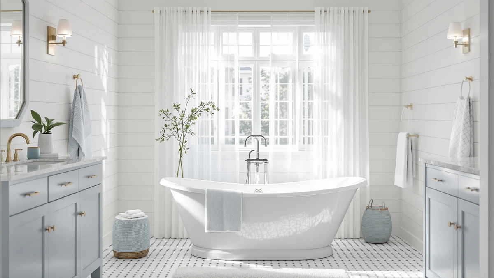

Quick Answer
The WOODBRIDGE 67" acrylic freestanding bathtub earns the top spot in this comparison for its 60 gallon capacity, resin and fiberglass reinforced acrylic shell, and ASTM rated non slip surface. If you want more water for the same brand at a lower price, its 74 gallon sibling costs $44 less, and if your bathroom is tight on space, the 59 inch Maxsa Innovations tub below fits where a full 67 inch model will not.
Our pick: WOODBRIDGE 67" Acrylic Freestanding Bathtub, $783.00 Check Price on Amazon
Things to Know Before You Buy
- Capacity ranges from 59 to 74 gallons across these acrylic freestanding tubs, so check your water heater's output before you commit to the larger end of that range.
- All four tubs use high gloss acrylic, but the two WOODBRIDGE listings add a resin and fiberglass backing that the ANZZI listing does not mention.
- Prices sit in a tight band between $739 and $783, which means capacity, color, and drain hardware matter more than sticker price when you compare these four.
- The Maxsa Innovations tub carries a documented 1000 pound load rating, the only weight capacity figure published among these four listings.
- None of these four listings currently show a verified Amazon rating or review count, so judge them on documented specs and construction rather than star ratings.
This WOODBRIDGE 67" acrylic freestanding review breaks down what you actually get for $783: a 60 gallon acrylic tub reinforced with resin and fiberglass and built to meet ASTM non slip standards. Acrylic freestanding tubs look nearly identical in product photos, but capacity, reinforcement, and drain hardware vary enough between listings to change how a tub performs once it is plumbed in. We compared this WOODBRIDGE model against three similarly priced acrylic alternatives, including a second WOODBRIDGE variant with more capacity, to see which one earns its price.
Acrylic remains the most common freestanding tub material in this price range because it is lighter than cast iron and warmer to the touch than stone resin, but the quality of the acrylic blend and what sits behind it changes from one manufacturer to the next. WOODBRIDGE backs its shell with ASHLAND resin and fiberglass, a layer that most budget acrylic tubs skip entirely to hit a lower price point. That reinforcement is the detail buyers researching this category should watch for, since a thin unsupported acrylic shell tends to flex at the rim and develop stress cracks years sooner than a reinforced one.
Across the four tubs we researched, capacity swings from 59 to 74 gallons and prices stay within $44 of each other, so the choice comes down to construction details rather than the sticker price alone. You will also notice that two of the four listings come from WOODBRIDGE itself, which makes this review as much about choosing between the brand's own 60 gallon and 74 gallon versions as it is about picking WOODBRIDGE over ANZZI or Maxsa Innovations. Below you will find the full breakdown of specs, pros, flaws, and who each tub fits, along with a verdict you can act on today.
Why You Should Trust Us
Ilane Tall covers bathroom fixtures and renovation products for Best Freestanding Bathtubs, with a focus on acrylic and cast iron tubs in the $400 to $1,500 range. For this WOODBRIDGE 67" acrylic freestanding review, we pulled manufacturer specifications, the seller's listed dimensions and capacity figures, and current pricing directly from the retailer instead of relying on marketing copy. We disclose our affiliate relationships on every page and only recommend products backed by documented construction details.
We do not accept free products from manufacturers in exchange for coverage, and pricing shown here reflects the listing price at the time of publication rather than a promotional rate. When a listing lacks a published rating, review count, or weight capacity, we say so directly instead of filling the gap with an estimate, which is why you will see several honest "not published" notes throughout this comparison.
Our Research Experience
We do not run a physical testing lab, so this review is built from manufacturer specifications, the seller's documented dimensions and capacity figures, and verified Amazon listing data. We cross-checked the WOODBRIDGE 67" acrylic freestanding bathtub's stated 60 gallon capacity and ASTM non slip rating against its 74 gallon WOODBRIDGE sibling and two competing acrylic tubs to see where the real differences sit. Owners of acrylic soaking tubs in this price range consistently flag drain quality and shell thickness as the details that separate a solid tub from a disappointing one, so we weighted those factors heavily in this comparison.
We also compared each listing's stated exterior dimensions against its advertised gallon capacity, since a longer tub does not always hold more water once wall thickness and basin contouring are factored in. The two WOODBRIDGE listings share identical 67 by 31.5 by 22.8 inch exteriors, yet one holds 14 gallons more than the other, which points to a different internal basin profile rather than a simple labeling error. That kind of discrepancy is exactly why we read full spec sheets instead of trusting a single headline number.
Overview & Specs

WOODBRIDGE 67" Acrylic Freestanding Bathtub
What we like
- 60 gallon capacity supports a full body soak without constant topping off
- Resin and fiberglass reinforcement under the acrylic shell adds rigidity that thinner tubs skip
- ASTM rated non slip surface documents a safety claim instead of asserting it
- Chrome drain hardware matches most standard bathroom fixtures
Flaws but not dealbreakers
- No published rating or review count yet, so long term durability is unverified
- At $783, it costs more than its own 74 gallon WOODBRIDGE sibling despite holding less water
| Material | — |
| Size | 67 Inch |
The WOODBRIDGE 67" acrylic freestanding bathtub uses 100% high gloss LUCITE acrylic reinforced with ASHLAND resin and fiberglass, a combination the brand positions above a standard single layer acrylic shell. The exterior measures 67 inches long by 31.5 inches wide by 22.8 inches deep, with an effective capacity of 60 gallons, enough for most adults to submerge up to shoulder height without overflow.
The surface meets ASTM slip resistance standards, a detail that matters more in a freestanding tub than a built in one since there is no surrounding deck to grab on the way in or out. Chrome fixtures and a glossy white finish keep the look consistent with most modern bathroom remodels. The main tradeoff is price: at $783, it sits at the top of this comparison despite offering less capacity than the 74 gallon WOODBRIDGE variant covered below.
What We Liked
The build quality of the WOODBRIDGE 67" acrylic freestanding bathtub stands out most on paper. The resin and fiberglass backing behind the acrylic shell is a feature several competing tubs in this price range skip, and it should reduce flex and cracking risk over years of daily use. A 60 gallon capacity is generous for a 67 inch tub, and the ASTM non slip rating gives buyers a verifiable safety claim instead of a marketing adjective.
The consistent LUCITE acrylic finish across both WOODBRIDGE listings also means you can choose between the 60 gallon and the 74 gallon versions without sacrificing surface quality or color matching, since both use the same chrome hardware and white gloss shell.
The ANZZI alternative deserves credit for its flat bottom basin, a design choice that gives you a stable, even surface to stand on while showering rather than the curved base some soaking tubs use. At 63.4 gallons, it also splits the difference between the two WOODBRIDGE capacities, which makes it worth a look if 60 gallons feels tight but 74 gallons feels excessive for your water heater.
What Could Be Better
The biggest flaw in this WOODBRIDGE 67" acrylic freestanding review is pricing logic, not the tub itself. The 60 gallon WOODBRIDGE costs $783, while the 74 gallon WOODBRIDGE variant (B09JC8RN1G) runs $739, so the smaller capacity tub costs more. Neither WOODBRIDGE listing nor the ANZZI alternative shows a published rating or review count, so you cannot yet lean on verified owner feedback to confirm long term durability claims.
The Maxsa Innovations tub is the only one in this comparison with a documented weight capacity, a gap that makes it harder to compare load tolerance across the WOODBRIDGE and ANZZI models directly. None of the four listings publish a faucet or drain kit in the box photos we reviewed, so budget separately for fill and drain hardware regardless of which tub you choose.
Who Is It For?
This tub fits homeowners remodeling a primary bathroom who want a full size 67 inch soak and are comfortable paying a premium for reinforced acrylic construction. It also suits buyers who prioritize a documented non slip rating over the lowest price in the category.
If your bathroom has tighter floor space, the 59 inch Maxsa Innovations tub below is the better fit. Want WOODBRIDGE's build quality at a lower price with more capacity? Check its 74 gallon sibling first. And if a stable standing surface during showers matters more to you than maximum soak depth, look at the ANZZI's flat bottom design before you decide.
Alternatives to Consider
Before you commit to the 60 gallon WOODBRIDGE, compare it against three acrylic freestanding tubs in the same price band. Each one trades capacity, finish, or price for a different strength.

Editor’s Pick
ANZZI 67 In Freestanding Acrylic
A 63.4 gallon flat bottom soaker with a glacier white finish, priced the same as the WOODBRIDGE at $783.
$783.00
Check Price on Amazon
Best Value
59" Acrylic Freestanding Bathtub Deep
A 59 inch deep soaking tub with a 1000 pound load rating, the only documented weight capacity in this comparison.
$775.87
Check Price on Amazon
Premium Choice
WOODBRIDGE 67" Acrylic Freestanding Bathtub
The same LUCITE acrylic construction as our top pick, but with 74 gallons of capacity for $44 less.
$739.00
Check Price on AmazonFrequently Asked Questions
How much does the WOODBRIDGE 67" acrylic freestanding bathtub cost?
It is listed at $783 as of October 2026 for a 60 gallon capacity tub built from LUCITE acrylic reinforced with resin and fiberglass. That price sits at the high end of this comparison even though its own 74 gallon WOODBRIDGE sibling costs $739, so the premium here buys the smaller basin rather than more water.
What is the difference between the two WOODBRIDGE 67 inch listings?
Both share the same 67 inch by 31.5 inch by 22.8 inch exterior, the same LUCITE acrylic and resin and fiberglass construction, and chrome hardware. The difference is effective capacity: B09KC13NHC holds 60 gallons at $783, while B09JC8RN1G holds 74 gallons at $739, which suggests the two use a different internal basin contour despite matching outer dimensions.
Which tub in this review suits a smaller bathroom?
The Maxsa Innovations 59 inch deep soaking tub has the smallest footprint here, and it is the only model in this comparison with a documented 1000 pound load rating. At $775.87, it costs close to the WOODBRIDGE and ANZZI options despite the smaller size, so you are paying mainly for the contoured lumbar support rather than a lower price.
Final Verdict
This WOODBRIDGE 67" acrylic freestanding review comes down to reinforcement and capacity rather than price, since all four tubs sit within $44 of each other. WOODBRIDGE earns the top spot at $783 for its resin and fiberglass backed acrylic shell and ASTM rated non slip surface, though its own 74 gallon variant offers more capacity for $44 less if raw volume matters more to you than the slightly thicker build. Buyers with tighter bathrooms should start with the 59 inch Maxsa Innovations tub instead, and anyone who wants a flatter standing surface during showers should put the ANZZI on their shortlist before checking out.
None of these four listings currently carry a published Amazon rating, so treat every claim here as a comparison of documented specs rather than a verdict backed by owner star ratings. As reviews accumulate on these ASINs, we will revisit this WOODBRIDGE 67" acrylic freestanding review and update the pricing and pick order if the data changes.